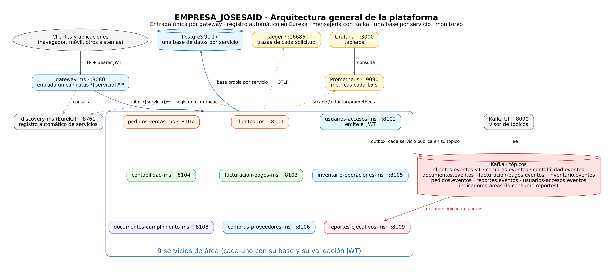
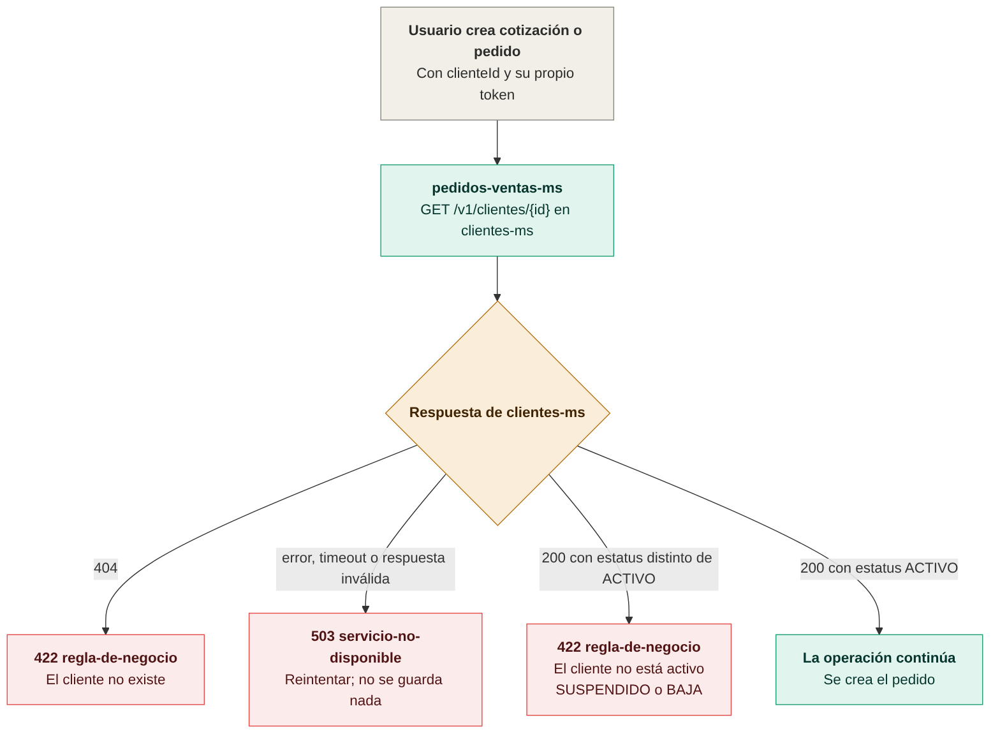
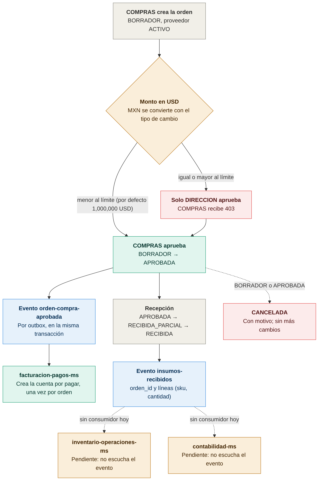
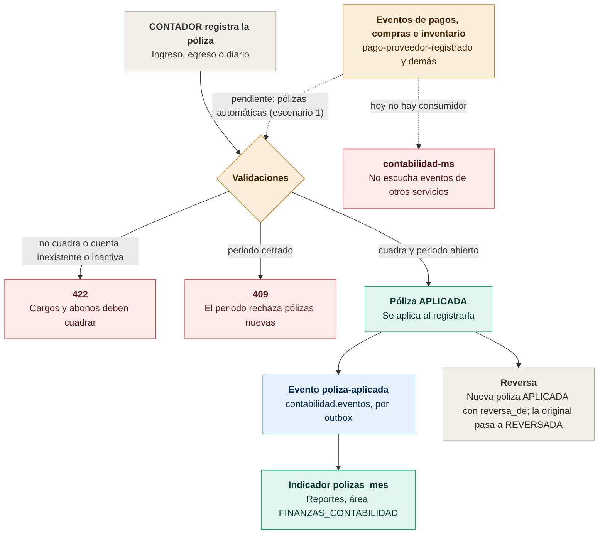
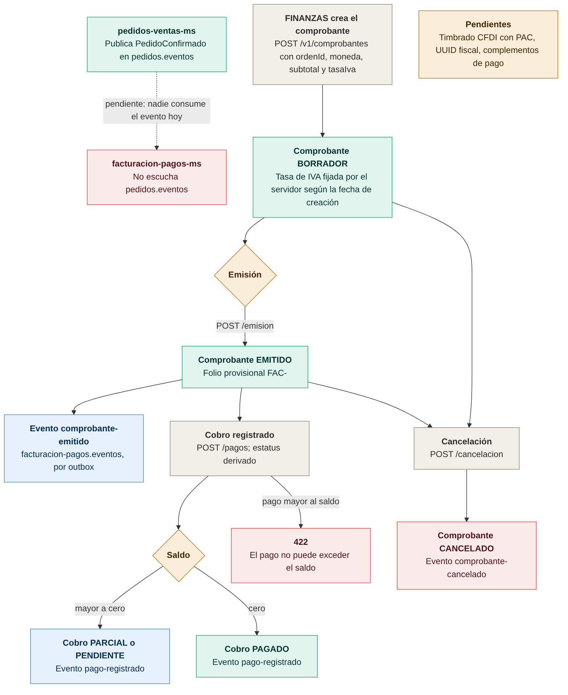
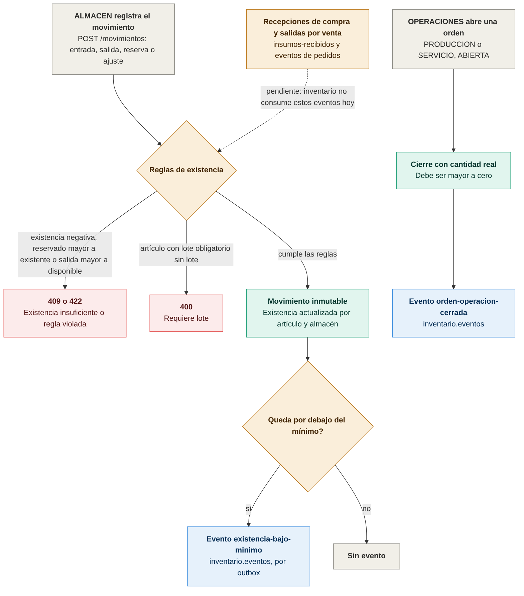
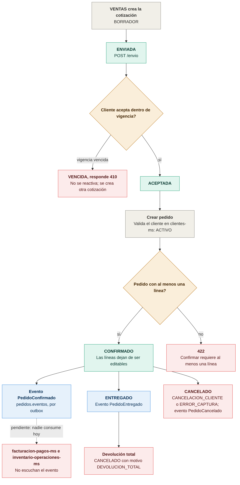
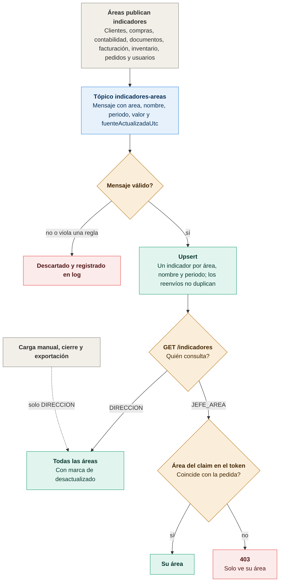
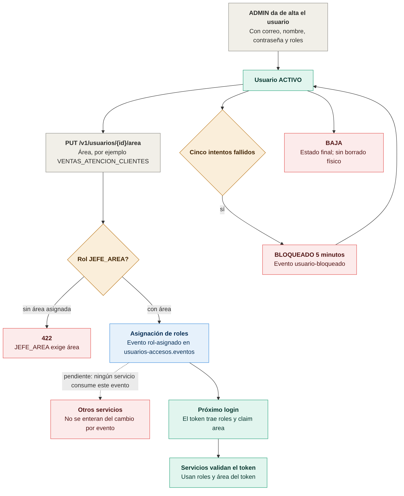

Arquitectura general
Cómo se conectan los servicios, la base de datos, Kafka y la observabilidad.
AArquitectura general del sistema

- Todas las peticiones entran por
gateway-ms(puerto 8080), que enruta a cada servicio con/{servicio}/**. discovery-ms(Eureka) registra cada servicio al arrancar; el gateway lo consulta para encontrarlos.- Cada servicio de área tiene su propia base de datos en PostgreSQL 17 y valida el JWT por su cuenta.
usuarios-accesos-mses quien emite el token. - Los eventos salen por outbox: cada servicio los publica en su tópico de Kafka.
reportes-ejecutivos-msconsumeindicadores-areas. - Observabilidad: Jaeger guarda las trazas, Prometheus junta las métricas cada 15 s, Grafana las muestra en tableros y Kafka UI permite ver los tópicos.
Flujos por área
Cada diagrama muestra el flujo de estados y las reglas de un área. Los recuadros en ámbar son pendientes conocidos.
01Clientes: validación de cliente en pedidos

- Antes de crear una cotización o pedido,
pedidos-ventas-msconsulta el cliente enclientes-ms. - Si el cliente no existe (404), responde 422.
- Si hay error, timeout o una respuesta inválida, responde 503 y no guarda nada.
- Si el estatus es distinto de ACTIVO (SUSPENDIDO o BAJA), responde 422.
- Solo con estatus ACTIVO la operación continúa y se crea el pedido.
02Compras: flujo de orden de compra

- COMPRAS crea la orden en BORRADOR, con proveedor ACTIVO. Los montos en MXN se convierten a USD con el tipo de cambio.
- Si el monto es menor al límite (por defecto 1,000,000 USD), COMPRAS aprueba. Si es igual o mayor, solo DIRECCION aprueba y COMPRAS recibe 403.
- Al aprobar se emite
orden-compra-aprobada, yfacturacion-pagos-mscrea la cuenta por pagar, una sola vez por orden. - La recepción avanza de APROBADA a RECIBIDA_PARCIAL y después a RECIBIDA, y emite
insumos-recibidos. - Pendiente:
inventario-operaciones-msycontabilidad-mstodavía no escuchaninsumos-recibidos. - Se puede cancelar con motivo mientras la orden esté en BORRADOR o APROBADA.
03Contabilidad: generación de pólizas

- El CONTADOR registra la póliza (ingreso, egreso o diario).
- Si no cuadra, o alguna cuenta no existe o está inactiva, responde 422. Si el periodo está cerrado, responde 409.
- Si cuadra y el periodo está abierto, la póliza queda APLICADA y se emite
poliza-aplicada. También alimenta el indicadorpolizas_mesde reportes. - Una reversa crea una póliza nueva APLICADA con
reversa_de, y la original pasa a REVERSADA. - Pendiente: las pólizas automáticas desde pagos, compras e inventario. Hoy
contabilidad-msno escucha eventos de otros servicios.
05Facturación: orden, comprobante y cobro

- FINANZAS crea el comprobante en BORRADOR con
ordenId, moneda, subtotal y tasa de IVA. El servidor fija la tasa según la fecha de creación. - Al emitirlo queda EMITIDO con un folio provisional
FAC-, y se emitecomprobante-emitido. - Los cobros dejan el comprobante en PARCIAL o PENDIENTE si queda saldo, o en PAGADO si el saldo llega a cero. Cada cobro emite
pago-registrado. Un pago mayor al saldo responde 422. - Se puede cancelar desde BORRADOR o EMITIDO, y emite
comprobante-cancelado. - Pendientes: el timbrado CFDI con PAC, el UUID fiscal y los complementos de pago. Además,
facturacion-pagos-mstodavía no consumePedidoConfirmado.
06Inventario: flujo de existencias

- ALMACEN registra un movimiento: entrada, salida, reserva o ajuste.
- Si la existencia quedaría negativa, lo reservado supera lo existente o la salida supera lo disponible, responde 409 o 422. Si el artículo exige lote y no se envía, responde 400.
- Un movimiento cumplido es inmutable y actualiza la existencia por artículo y almacén. Si queda por debajo del mínimo, se emite
existencia-bajo-minimo. - OPERACIONES abre una orden de PRODUCCION o SERVICIO. Al cerrarla con una cantidad real mayor a cero, se emite
orden-operacion-cerrada. - Pendiente:
inventario-operaciones-msno consume las recepciones de compra ni las salidas por venta.
07Pedidos: de cotización a pedido

- VENTAS crea la cotización en BORRADOR y la envía con
POST /envio, que la deja ENVIADA. - Si el cliente acepta dentro de la vigencia, queda ACEPTADA. Si la vigencia ya venció, queda VENCIDA y responde 410; no se reactiva, hay que crear otra.
- Al crear el pedido se valida que el cliente esté ACTIVO en
clientes-ms. - Para confirmar el pedido debe tener al menos una línea; si no, responde 422. Confirmado, las líneas ya no se editan y se emite
PedidoConfirmado. - Desde CONFIRMADO puede pasar a ENTREGADO (
PedidoEntregado) o a CANCELADO porCANCELACION_CLIENTEoERROR_CAPTURA. Una devolución total es un CANCELADO con motivoDEVOLUCION_TOTAL. - Pendiente:
facturacion-pagos-mseinventario-operaciones-mstodavía no escuchanPedidoConfirmado.
08Reportes: flujo de indicadores

- Cada área publica sus indicadores en el tópico
indicadores-areas, con área, nombre, periodo, valor y fecha de actualización. - Un mensaje válido se guarda con upsert: hay un indicador por área, nombre y periodo, así que los reenvíos no duplican datos. Un mensaje inválido se descarta y queda registrado en el log.
GET /indicadoresdepende de quien consulte: DIRECCION ve todas las áreas, marcando las desactualizadas; JEFE_AREA solo ve su área y, si pide otra, recibe 403.- La carga manual, el cierre y la exportación son solo para DIRECCION.
09Usuarios: alta, roles y área

- ADMIN da de alta al usuario con correo, nombre, contraseña y roles. Queda ACTIVO.
- Se le asigna un área con
PUT /v1/usuarios/{id}/area. Si tiene el rol JEFE_AREA y no tiene área, responde 422. - La asignación de roles emite
rol-asignado. Los servicios ven los cambios en el próximo login, cuando el token trae los roles y el claim de área. - Con cinco intentos fallidos el usuario queda BLOQUEADO por 5 minutos (
usuario-bloqueado). BAJA es un estado final, sin borrado físico. - Pendiente: ningún servicio consume
rol-asignado, así que no se enteran del cambio por evento.